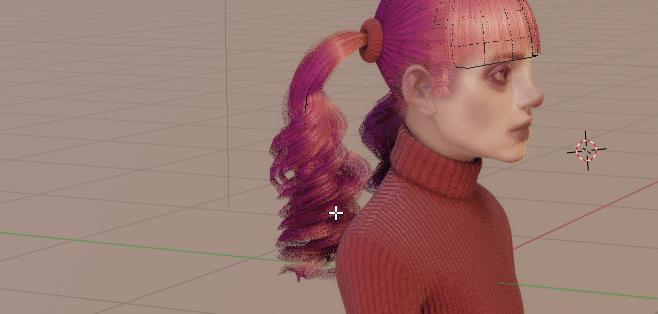

Vertex Color Master¶
I recommend Vertex Color Master addon for more detailed control over managing vertex colors on mesh (I added some features to VCMaster with Hair Tool in mind - more advanced color randomization per mesh island, drawing gradients)
Mira Tools¶
Mira Tools - It is great plugin especially the linear deformer. It will help you move multiple points and adust them: rotate, scale, offset, bend etc. I made the linear deformer work with curves.
Note: Since 2.23 release Linear Deformer is included in Hair Modeling tools inside the HTool addon
